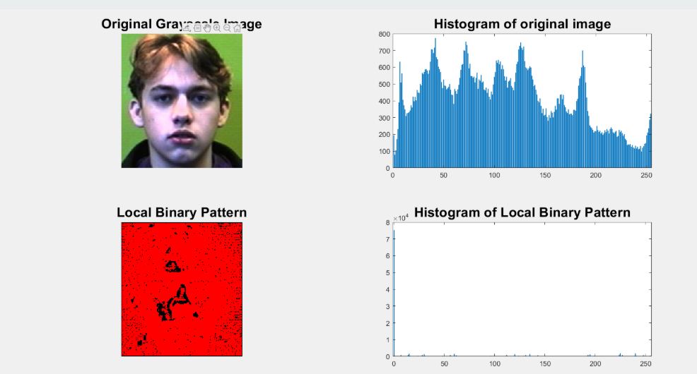

Facial Recognition
My project is about Face Recognition. I decided to implement it with the Matlab programming language, with the Matlab IDE. For the detection of faces in an image, I relied on Viola and Jones' face detector. For recognition, I adopted the Local Approach rather than the Global Approach. Indeed, I made this choice by having tested a start for both, having hesitated a lot between these two methods, especially by having learned about these methods during the work requested earlier in the semester (state of the art and oral presentation of an article). The Local Approach is therefore as follows: The method consists in splitting the face images into patches, extracting the specific features (2 methods for extracting features: Viola and Jones' method, and LBP) for each patch, possibly selecting the most discriminating features, and finally a classification step to recognize the presented face as input (via a SVM, and a Fisher's Discriminant Linear Analysis). Then, I compared (in terms of recognition rate and recognition time) the obtained results with the obtained features by the LBPs, with those obtained with the Viola and Jones features. Finally, I also compared the obtained results with the two proposed classification methods.
Detected faces with Viola and Jones' face detector

Patch splitted image

Extracted features with Viola and Jones method

Extracted features (and histograms) with LBP method

Results obtained with SVM classifier